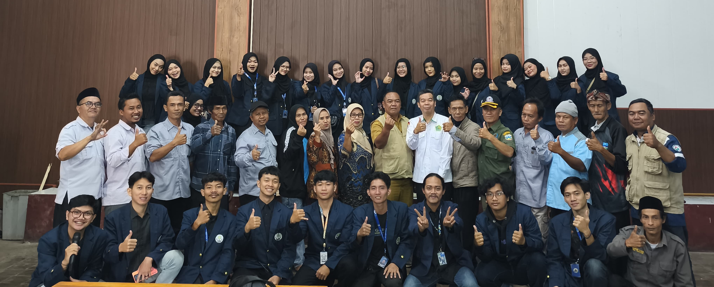

Pembukaan KKN Mahasiswa UIN di Desa Sukalilah :
Sinergi Tiga Kelompok untuk Pemberdayaan Masyarakat

Sukalilah, 21 Juli 2025 – Kegiatan Kuliah Kerja Nyata (KKN) secara resmi dibuka di Desa Sukalilah, yang menjadi lokasi pengabdian bagi tiga kelompok mahasiswa, yaitu Kelompok 28, 29, dan 30. Pembukaan yang berlangsung pada Senin pagi ini diwarnai dengan semangat kolaboratif antara mahasiswa, perangkat desa, dan masyarakat setempat.
Acara pembukaan yang diselenggarakan di Balai Desa Sukalilah dihadiri oleh Kepala Desa Sukalilah beserta jajarannya, Dosen Pembimbing Lapangan (DPL), tokoh masyarakat, serta perwakilan dari ketiga kelompok KKN. Rangkaian acara dimulai dengan pembacaan ayat suci Al-Qur'an, dilanjutkan menyanyikan lagu kebangsaan, serta sambutan dari Koordinator Desa, Bintang Taufiquraan. Selanjutnya, sambutan disampaikan oleh Dosen Pembimbing Lapangan, Dr. H. Mohamad Jaenudin, S.Ag., M.Ag., M.Pd., dan ditutup dengan sambutan hangat dari Kepala Desa yang diwakili oleh Sekretaris Desa, Evi Mulyadi. Dalam sambutannya, beliau menyampaikan harapan agar kehadiran mahasiswa KKN dapat memberikan kontribusi nyata bagi kemajuan dan pemberdayaan masyarakat desa, sejalan dengan slogan KKN Desa Sukalilah: “Datang Membawa Solusi, Pulang Tinggalkan Inspirasi.”

Mahasiswa dari ketiga kelompok akan melaksanakan pengabdian selama kurang lebih 40 hari ke depan, dengan berbagai program kerja yang dirancang berdasarkan kebutuhan dan potensi lokal. Program-program tersebut mencakup bidang pendidikan, lingkungan, kesehatan, keagamaan, serta penguatan ekonomi masyarakat berbasis potensi desa.
Dengan mengusung semangat “Kreatif Berkarya, Desa Berdaya,” kegiatan KKN ini diharapkan menjadi langkah awal kontribusi nyata mahasiswa dalam pengabdian kepada masyarakat, serta sebagai bentuk implementasi nilai-nilai rahmatan lil 'alamin dalam kehidupan sosial.